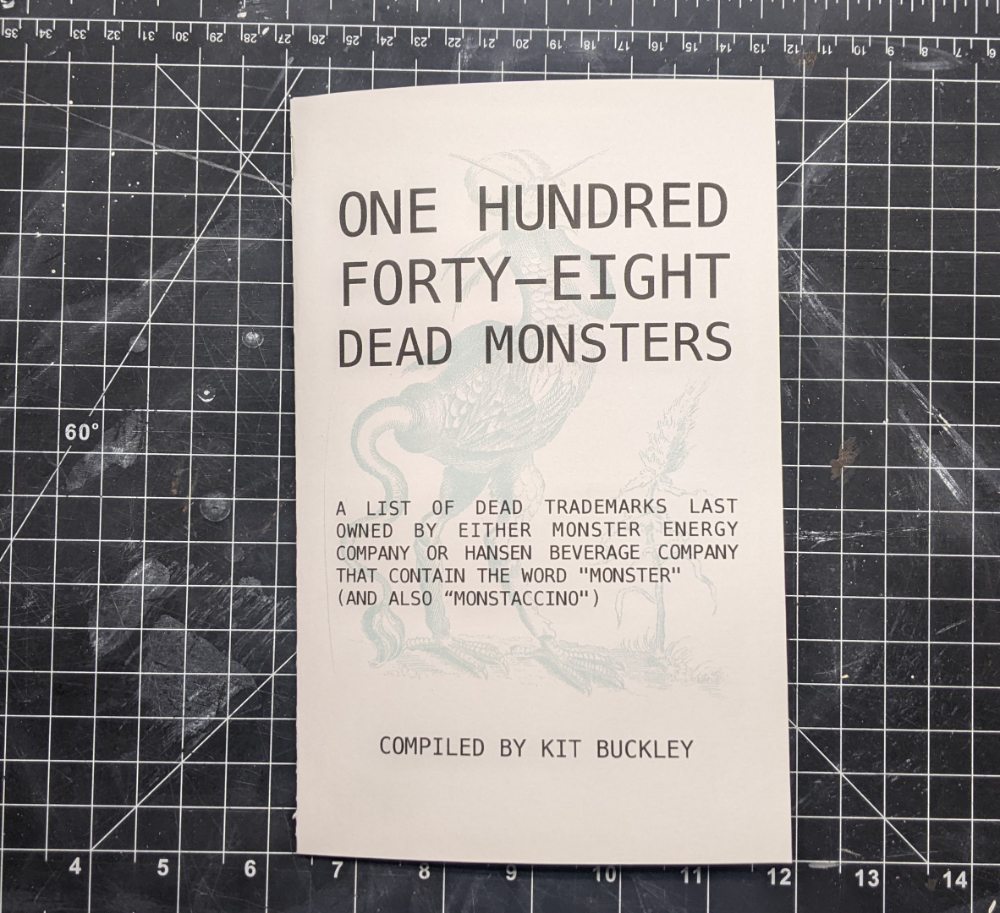
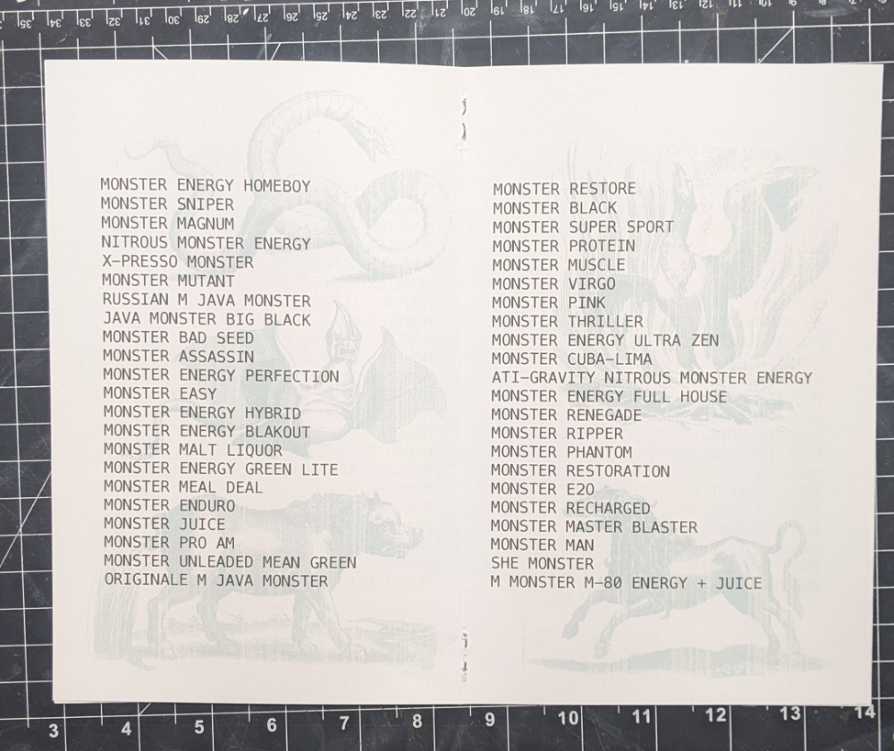
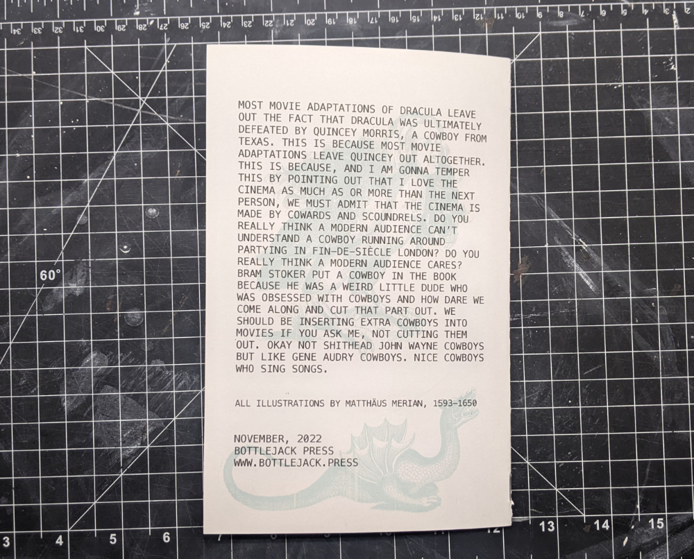

one hundred forty-eight dead monsters
a list of dead monster energy trademarks
while going deep in the weeds doing research for spaghetti magazine #2, i kept coming across bizarre trademarks that had been registered by the monster energy company. this zine is a collection of the trademarks last owned by either monster energy company or hansen beverage company (what the company was known before it became monster in 2012) that contain "monster" and which have not been use and so have lapsed or are - in the words of the united states patent and trademark office - dead. they all sound like products that for whatever reason never made it to market. featuring monster engravings by matthäus merian (1593-1650).
8 pages. you can see the full list of dead monster trademarks here.
  